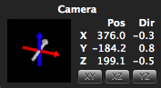
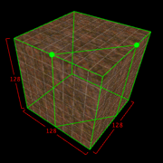
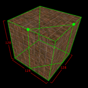

Editing Objects
TrenchBroom allows you to move, rotate and flip objects. You can also change the shape of brushes by face dragging and clipping them. All properties of faces and entities can be changed using the inspector. Finally, you can of course delete objects.The Editing Plane
It is very important that you understand how the view direction of the camera relates to editing. Since the mouse is a 2D input device, you cannot directly control all three dimensions when you edit objects with the mouse. For example, if you want to move a brush around, you can only move it in two directions by dragging it. Because of this, many editing operations take the view direction into account to decide which dimensions the mouse movements should be mapped to. So if you are looking down along the Z axis while you are moving a brush, your mouse movement will be mapped to the X and Y axes and the brush can only be moved on the XY plane. The plane which the mouse movement is mapped to in editing operations is called the editing plane. In general, TrenchBroom chooses either the XY plane, the XZ plane or the YZ plane as the editing plane depending on whether the camera looks generally in the direction of the (positive or negative) Z, Y or X axis, respectively.
Remember that you can use the quick info bar at the bottom of the 3D view to keep your orientation. On top of that, the compass gives you a visual hint as to which plane is the current editing plane. In the screenshot on the left, the predominant axis of the camera direction is the Y axis, which is why it has gray color. The two axes which are rendered in color make up the editing plane, which in this case is the XZ plane.
Moving Objects
You can either move objects using the cursor keys or the mouse. The ← and → cursor keys move the selected objects horizontally on the editing plane whereas the ↑ and ↓ keys move them vertically. To move objects towards or away from the camera, use the page down (⇟) and page up (⇞) keys, respectively.
To move the selected objects using the mouse, click and drag the objects with the left mouse button. This will move the objects on the current editing plane. If you move the mouse cursor over a selected object, it will be changed into a cross that shows you in which directions you can move the object by dragging it. You can move the objects towards or away from the camera using the scroll wheel of your mouse while dragging.
If grid snapping is enabled, the bounding box of the selected objects is snapped to the grid. This is most easily explained with the above screenshots. The bounding box of the object in the left screenshot is obviously not aligned to the grid because the object is smaller than the grid. If this object is moved to the right, it is not moved by the actual grid size. Instead it is moved so that the right side of the bounding box is aligned to the grid. This can be seen in the right screenshot. If you move this object to the right again, it is moved by the grid size because the right side of the bounding box was already aligned to the grid.
Rotating Objects
There are two options for rotating objects. The first is to rotate the selected brushes by 90° about the one of the axes of the coordinate system. The second is to rotate the selected objects freely using the mouse. In both cases, the center of the rotation is the center of the selected objects' bounding box.
To rotate the selected objects by 90° clockwise about one of the axes of the coordinate system, choose Edit » Object » Rotate 90 CW from the menu or hit ⌘R. If you wish to rotate the objects counter clockwise, you need to hold the option key (⌥) when you invoke the rotate command. The actual rotation axis depends on the camera direction. TrenchBroom always selects the axis which has the smallest angle with the camera direction. So if you want to rotate some objects about the Z axis, you need to orient the camera so that it looks down or up at the objects.
Objects can also be rotated freely without any restriction as to the angle or axis of the rotation. To rotate the selected objects, hold the option key (⌥) and move your mouse in the 3D view. You will see that the mouse cursor turns into a rotation cursor that indicates the axes about which the objects can be rotated using the mouse. To start the rotation, click and drag the left mouse button. If you move the mouse horizontally, the objects are rotated about the Z axis and if you move your mouse vertically, they are moved about the current vertical rotation axis. The current vertical rotation axis depends on the horizontal rotation you have already applied. Note that the rotation angle is constrained to 15° increments if grid snap is enabled. Disable grid snap to rotate the selected objects without any constraints.
Flipping Objects
The selected objects can be flipped (or mirrored) along the horizontal axis of the editing plane by choosing Edit » Object » Flip Horizontally from the menu or hitting ⌘F. To flip the selected objects along the vertical axis of the editing plane, hold the option key (⌥) when invoking the flip command.
Editing Brushes
The shape of a brush can be changed using two different tools: Face dragging and clipping. While face dragging can only change the location of individual faces, clipping can truly change the shape of a brush by adding new faces and deleting existing faces of the brush. The following section will cover face dragging while clipping is explained in the subsequent section.Face Dragging

Face dragging is actually a translation of a face along its normal. This means that you cannot move faces around freely, but are restricted to the face's norm as its single axis of movement. There are two options to initiate a face drag. The first is to select a face and then click and drag it with the left mouse button. Once you move your mouse over a selected face, you will notice that the cursor changes into a small yellow arrow. This arrow indicates the direction in which you can drag the face. If you select multiple faces and start dragging one of them, all faces will be moved along their normal. This way, you can change a brush's size in multiple dimensions at once.
The second way to drag a face is to select the brush which the face belongs to and then click and drag on a face with the left mouse button while holding the command key (⌘). Note that if you have multiple brushes selected and you drag a face, every face of any selected brush that lies in the same plane as the dragged face will be moved, too. This allows you to quickly change the sizes of multiple brushes at once.

You can also drag faces which are behind the brush, but this is only possible if you use the second option described above. If you hold the command key (⌘) and move your mouse outside of a selected brush, you will notice that the cursor again changes to the yellow arrow if you move the cursor close to an outer edge of the brush. Since any edge belongs to exactly two faces, an outer edge belongs to one face that faces the camera and one face that faces away from the camera. The latter face is the one which you can drag if you start your drag just outside of an outer edge. Note that you can only drag faces which have at least one edge visible. If you want to drag faces which are completely on the back of the brush, you need to reposition the camera.
Clipping
The clipping tool is the most important tool to change the shapes of brushes because it is the only tool that can actually add and remove faces from a brush. It is also the only tool in TrenchBroom that is not activated with a modifier key such as the shift key. To toggle the clip tool, you need to press the C key while brushes are selected. Afterwards, you will notice a green dot under your mouse cursor if you move the mouse over a selected brushes (see also the first of the following screenshots).
The general principle of any clip tool is that it cuts one or several brushes by adding a face to them. Remember that brushes are made of faces, and each face defines a plane which is actually the boundary of a half space. The brushes volume is then the intersection of all the half spaces defined by its faces. If you add a new face to a brush, there are three possible outcomes:
- The halfspace defined by the new plane does not intersect the brushes volume at all, and as a result the brush becomes invalid and is deleted.
- The brushes volume is entirely contained in the halfspace defined by the new face, so nothing actually changes.
- The intersection of the brushes volume and the half space defined by the new face is smaller than the brushes volume. The result is that the new face is added to the brush and all other faces which intersect with the new face are cut off. Additionally, some faces may be removed from the brush. This is what the clipping tool is designed to do.
The clipping tool allows you to define a plane (called the clipping plane) by placing at least two points in space. This plane is then added to the selected brushes as a new face, and some brushes are deleted, some are changed and some retain their shape as described above. Depending on the orientation of the clipping plane, different parts of the selected brushes are retained and deleted. The following screenshots show the three clipping modes of the clipping tool:

 

The first screenshot shows the clipping plane in its default orientation. Here, only one part of the brush is kept and the other is deleted. The second screenshot shows the same clipping plane, but with the opposite orientation, so the part of the brush that would be deleted in the first screenshot is retained and vice versa. And finally the third screenshot shows the third mode of the clipping tool. Here, both parts of the brush are retained, so the brush is split in two along the clipping plane.
Now how does the clipping tool work in practice? After it is activated, you can place up to three points in space. These points define the clipping plane. The following screenshots should give you an idea how this works:


The green dots represent the clipping points. The clipping tool needs at least two clipping points to create a clipping plane. You can place clipping points by clicking with the left mouse button, but you can only place clipping points on the faces of the currently selected brushes. However, you can drag clipping points off the faces (see below). You can delete the most recently placed clipping point by hitting the backspace key (⌫). Once you have placed two points, the clipping tool will try to guess a clipping plane for you. If you need more control over the clipping plane, you need to plane a third point. Now the clipping plane will be represented by a green triangle that has the three points as vertices (see third screenshot).
The clipping tool always gives you an instant preview of how the clipped brushes will look like. Once you are satisfied with the clipping plane, you can hit return (↩) to perform the clip. You can toggle between the three modes of the clipping tool using the tab key (⇥). If you would like to cancel the clipping operation, simply deactivate the clipping tool by hitting C.

In certain situations, you have to place clipping points which are not on the surface of any of the selected brushes. If you find that you to place a clipping point somewhere in the void, you can drag that clipping point off any of the faces of the selected brushes. Simply click on any face of a selected brush and drag with the left mouse button. You will see a red grid which will help you place the point. The grid is aligned with the face on which you started your drag and it represents the plane on which you can place the clipping point. You can also edit already placed clipping points by dragging them around with the left mouse button.
Applying Textures
You can assign new textures to faces in two ways: Selecting the texture for the currently selected faces in the texture browser or using the stamp tool. To assign a texture using the first way, select the faces you want to assign the texture to in the 3D view and then click on the texture in the texture browser. If you select entire brushes in the 3D view, the texture will be assigned to all faces of the selected brushes.

The stamp tool is useful if you want to copy the texture of an existing face to other faces. Select the face whose texture you want to copy in the 3D view, then left click on the faces you wish to copy the texture to while holding the option key (⌥). You will notice that once you press the option key, the cursor changes to a yellow square if you move it over a non-selected face. In the screenshot, the selected face has a blue brick texture. This texture will be applied to the face on the right once the face is clicked on. If you double click while holding the option key, the texture is applied on each face of the brush.
In the next section, you will learn how you can use the stamp tool to not only copy the texture and the attributes of an existing face to other faces.
Changing Face Attributes
The attributes of a face are the horizontal and vertical offsets and scaling factors as well as the rotation of the texture. To examine the attributes of a face, you must first select it in the 3D view. The quick view bar at the bottom of the 3D view displays the attributes of the selected face(s) in its very right section:
The other way to inspect the attributes of the selected face(s) is to switch to the Face tab of the inspector. Here, you can also manipuate the attributes by entering new values or by using the small up / down buttons next to the text fields.

The second way to manipulate the attributes of the selected face(s) is to use the appropriate menu commands in the Edit menu, the Edit » Texture submenu or their respective keyboard shortcuts. The following list details each of the commands:
- Edit » Move Left (←) - decreases the horizontal texture offset by the current grid size
- Edit » Move Right (→) - increases the horizontal texture offset by the current grid size
- Edit » Move Up (↑) - increases the vertical texture offset by the current grid size
- Edit » Move Down (↓) - decreases the vertical texture offset by the current grid size
- Edit » Texture » Rotate Left By 15 (U) - rotates the texture left by 15 degrees (⌥: 1 degree)
- Edit » Texture » Rotate Right By 15 (O) - rotates the texture right by 15 degrees(⌥: 1 degree)
- Edit » Texture » Stretch Horizontally (H) - increases the horizontal stretching factor by 0.05
- Edit » Texture » Shrink Horizontally (F) - decreases the horizontal stretching factor by 0.05
- Edit » Texture » Stretch Vertically (T) - increases the vertical stretching factor by 0.05
- Edit » Texture » Shrink Vertically (G) - decreases the vertical stretching factor by 0.05

Besides copying the texture of the selected face to other faces, the stamp tool can also copy face attributes. Simply hold the command key (⌘) while clicking on another face and along with the texture, the attributes of the selected face are copied to the face you clicked on. In the screenshot, you can see how the stamp cursor is changed to indicate that you are copying face attributes.